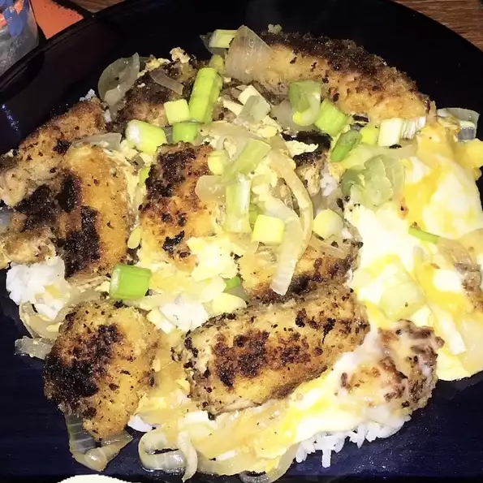

Katsudon

Description
Katsudon is a popular Japanese food, a bowl of rice topped with a deep-fried breaded pork cutlet, egg, vegetables, and condiments.
Ingredients
- ⅔ cup prepared dashi stock
- 2 teaspoons white sugar
- 2 teaspoons mirin (Japanese sweet wine)
- 2 teaspoons soy sauce
- ½ teaspoon salt
- 1 tablespoon vegetable oil
- 1 small onion, chopped
- 2 (3 ounce) fried breaded pork chops, sliced into long strips
- 2 eggs, beaten
- 1½ cups cooked short-grain rice
Steps
- Mix dashi, sugar, mirin, soy saunce, and salt together in a small bowl.
- Heat vegetable oil in a small skillet over medium heat. Add onion; cook and stir until translucent, about 5 minutes. Stir in dashi mixture. Lay pork slices carefully on top of the onions. Drizzle eggs around the slices. Cover skillet and cook until eggs are set, about 2 minutes.
- Divide rice between 2 bowls. Top each with half the onions, eggs, and pork slices.